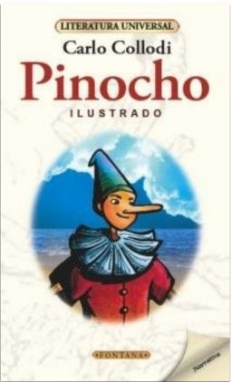

Sobre mí
Soy Edgar Lorenzo, tengo 20 años, disfruto pintar, dibujar en digital y escuchar música.
Desde pequeño, siempre me ha llamado la atención cómo funciona el mundo digital, lo que despertó en mí un interés por aprender sobre la tecnología y sus avances.
Video de presentación
Mis cualidades
- Paciente: Me tomo el tiempo para pensar y actuar con calma.
- Optimista: Siempre trato de ver el lado positivo de las cosas.
- Organizado: Me gusta tener todo bajo control y planificado.
- Creativo: Disfruto de imaginar nuevas ideas y expresarlas.
- Proactivo: Me adelanto a los problemas buscando soluciones.
Mis pasatiempos
- Dibujar
- Jugar videojuegos
- Pintar
- Hacer ejercicio
Mis libros favoritos
1. Un beso bajo la lluvia – Violeta Voyd
Resumen: Una historia romántica que explora el poder de los recuerdos y los encuentros inesperados.
2. Bajo la misma estrella – John Green
Resumen: Hazel y Augustus son dos adolescentes con cáncer que se embarcan en una historia de amor agridulce.
3. Pinocho – Carlo Collodi
Resumen: Las aventuras del muñeco de madera que sueña con ser un niño real.
4. Cien años de soledad – Gabriel García Márquez
Resumen: La historia de la familia Buendía en el mítico pueblo de Macondo.

5. It – Stephen King
Resumen: Un grupo de amigos enfrenta a una entidad maligna que toma la forma de un payaso.
Mis películas favoritas
1. Interstellar
Director: Christopher Nolan
Protagonistas: Matthew McConaughey, Anne Hathaway
2. It
Director: Andy Muschietti
Protagonistas: Bill Skarsgård, Jaeden Martell
3. Son como niños
Director: Dennis Dugan
Protagonistas: Adam Sandler, Kevin James
Canciones favoritas
| Nombre de la Canción | Género | Cantante | Álbum | Año |
|---|---|---|---|---|
| More Than Friends | Dance / Reggaeton | Inna ft. Daddy Yankee | Nirvana | 2017 |
| Rather Be | Electrónica / Pop | Clean Bandit ft. Jess Glynne | New Eyes | 2014 |
| Brother | Pop Rock / Indie pop | Kodaline | In a Perfect World | 2013 |